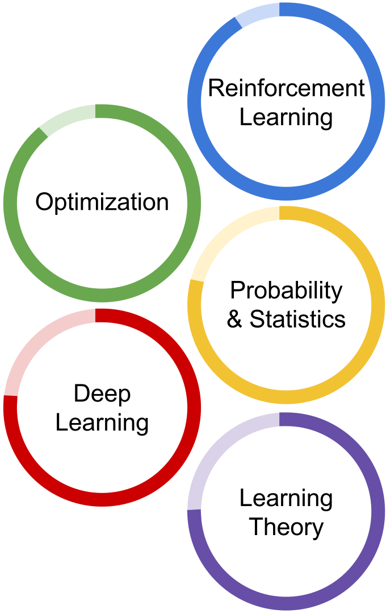
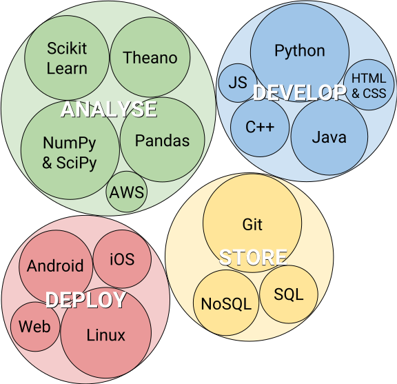

Header
Skills
Machine Learning
Software


Experience & Education
UT Austin: PhD Student in Computer Science
(2010 – Present)
Research:
Reinforcement Learning w/ Peter Stone, Contextual Bandits w/ Pradeep Ravikumar, Hypothesis Testing w/ Constantine Caramanis
Teaching:
Teaching Assistant for Large Scale Machine Learning, Convex Optimization, Artificial Intelligence, iOS Mobile Development
Courses:
Reinforcement Learning, Graphical Models, Probabilistic Algorithms, Numerical Linear Algebra, Data Mining, Machine Learning
Other:
NSF Fellowship; Co-Founder of Deep Learning Reading Group
IBM T. J. Watson Research Center Internship
(Summer 2013)
Developed methods for using satellite images to predict weather and its impact on solar energy markets with Gerry Tesauro
NASA Dexterous Robotics Lab
(2008-2009)
Undergraduate Research at Johnson Space Center with
Rob Platt
: Developed particle filter methods for interpreting haptic sensor data from Robonaut 2
Rice University
(2005-2010)
B.A. in Mechanical Engineering and Cognitive Science with honors